Markmið lokaverkefnisins er að hanna og búa til heilstæðan hlut með fræsingu. Í boði var að fræsa út út krossviðsplötu til þess að búa til stóa einingu eða fræsa út sílikonmót í vaxkubb. Einnig var sett áhersla á skipulagningu verkferla innan hópsins.
Þetta verkefni var unnið samhliða öðru verkefni í áfanganum Tölvustýrður Vélbúnaður. Í því verkefni gætum við notið góðs á sílikon hulsum með golfkúlumynstri á ytra yfirborði hulsunnar sem hægt væri að setja á pípu, eins og sést hér fyrir neðan. 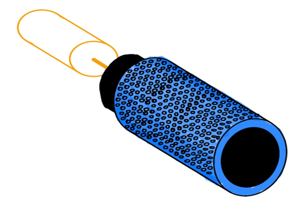Hluti 1 - Mótagerð
Markmið lokaverkefnisins er að hanna og búa til heilstætt verkefni með fræsingu. Í boði var að fræsa út út stórri krossviðsplötu til þess að hanna eitthvað stórt eða fræsa út sílikonmót í vaxkubb.
Fræsing í vaxkubb
Ferlið til þess að búa til þessar hulsur er þrískipt. Fyrst þarf að fræsa í vaxkubb sem ætti að gefa okkur útlit sílikon mótsins. Þaðan þarf að hella sílikoni ofan í vaxkubbinn og leyfa sílikoninu að storkna, þá erum við kominn með mót af negatívu hlutarins. Í það mót getum við helt nýju sílikoni eða öðrum efnum til þess að steypa hlutinn. Eftir steypinguna má taka fjarlægja mótið og eftir stendur hluturinn. Mótin sjálf eru endurnýtanleg og getur því sparað mikinn tíma í framleiðslu.
Í gegnum hönnunarferlið er mikilvægt að hafa í huga að fræsirinn er lóðrétt frádráttar tækni, því þarf að hafa í huga að öll svæði sem verða fræst þurfa að vera aðgengileg að ofan. Til þess að geta fræst út sívalinginn þurfum við að búa til fjögur mót, einn fyrir hvern fjórðung hringsins. Ef aðeins tvö mót væru búin til, eitt fyrir hvern hvern, helming væri ekki nægilegt aðgengi fyrir bitann á ákveðnum stöðum mótsisns, eins og sjá má hér fyrir neðan.
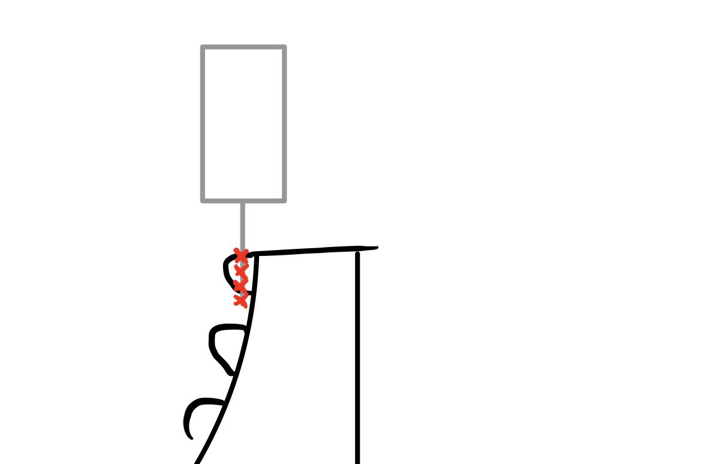Einnig skiptir máli hvernig mótið er sett upp fyrir fræsingu, t.d. ef boginn snýr niður þarf að fjarlægja mun meira efni en ef hann snýr upp.
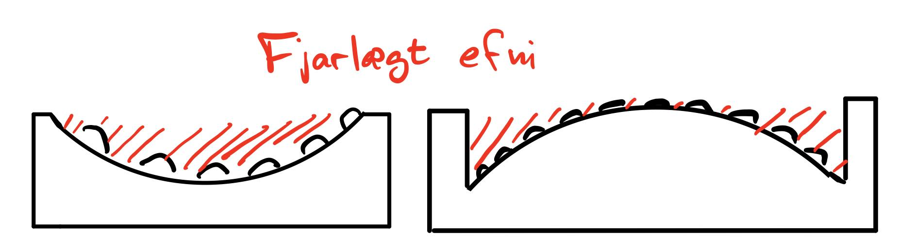Hönnun
Við byrjuðum á því að teikna upp fjórðung sílindersins í Fusion360 með örlítið minni radíus en pípurnar okkar. Þetta er gert til þess að tryggja að golfkúlu hólkurinn verður þröngt setinn við ytra yfirborð pípunnar. Ekki er hætta á að hólkurinn passi ekki á pípurnar þar sem að sílikonið er teygjanlegt. Fyrst prófuðum við að teikna fjórðunginn út Sheet Metal, fletja hann út á og spora holurnar inn í flötinn (sjá frekari leiðbeiningar í Verkefni 2 á þessari síðu). Kúlurnar við endana voru sporaðar fyrst, með því að teikna línu hornrétt á flötinn sem samsvaraði radíus hringsins og frádregnri dýpt. Út frá þeim punkti var teiknaður hringur.
Því næst var teikningunni revolve-að og hálfkúluprófíll fenginn á yfirborðið.

Næsta skref var að skilgreina parameter fyrir bilin á milli hverri kúlu. Einfalt er að reikna út nauðsynlega lengd bila, út frá ákveðnum fjölda kúla (sjá á myndinni hér fyrir neðan).
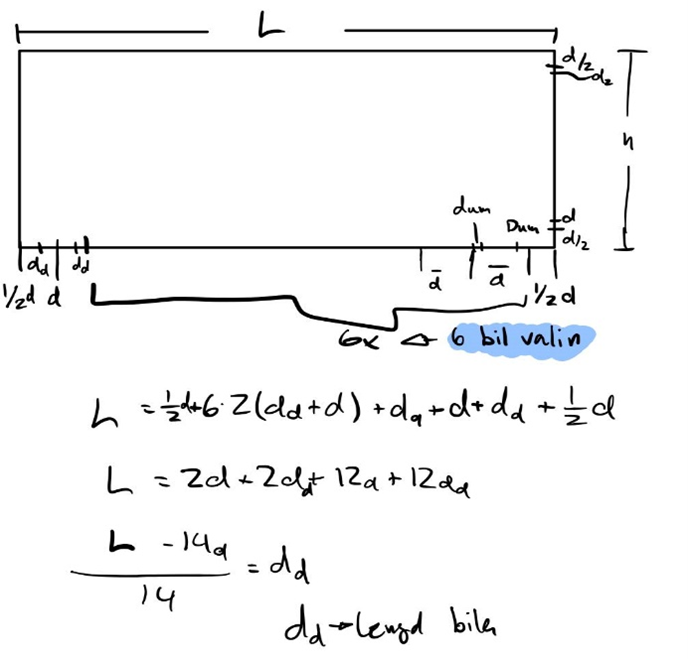Því næst voru sett upp tvö Construction Plön sem höfðu nauðsynlega fjarlægð frá enda plötunnar, m.v. lengd bila, og kúlurnar teiknaðar með sömu aðferðum og áður. Þaðan voru hálfkúlu prófílarnir valdir og fjöldaframleiddir með með Rectangular Pattern.
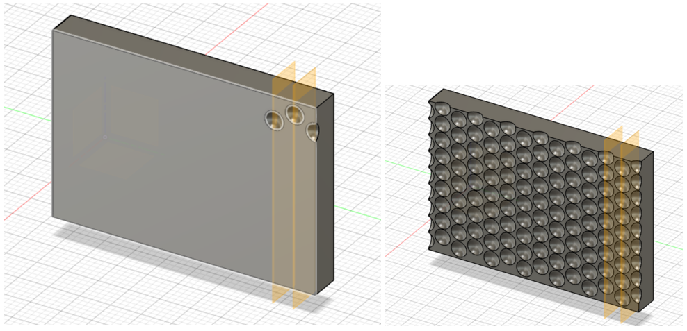Við vorum hinsvegar ekki alveg sáttir við niðurstöðuna, þar sem hálfkúlu prófílarnir bjöguðust mikið þegar fletinum var breytt í hringarfjórðung. Þar af leiðandi var hann teiknaður aftur, nú ekki sem Sheet Metal. Í stað þess að nota Rectangular Pattern til þess að fá hálfkúlu prófílana yfir kúpta flötinn var notast við Circular Pattern, sem jafnar út bil á milli hringa sjálfkrafa. Eftir að prófílarnir voru komnir yfir flötinn var notað Rectangular Pattern til þess að fá prófílana á restina af hringarfjórðungnum.
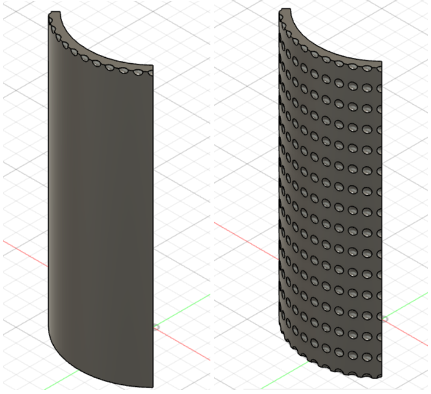Til þess að búa til restina af prófílunum notuðum við Plane Along Path. Hér var fjarlægð plansins (Distance) dregið handvirkt þar til að það lá á milli fyrstu hálfkúlur flatarins. Nú má endurtaka Rec og Circ mynstrin til þess að fá eftirfarandi niðurstöðu.
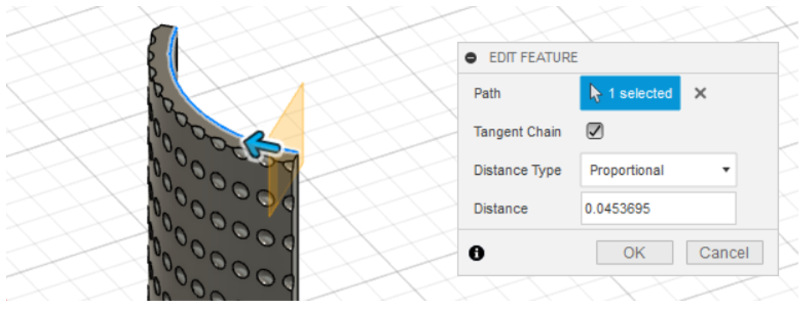 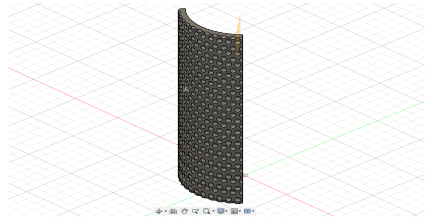Við frekari skoðun komumst við að því að fræsingin myndi líklegast ekki heppnast á ákveðnum svæðum með þessai uppsetningu. Alveg upp við endana á hlutnum nær fræsirinn ekki að komast á svæðið hér fyrir neðan.
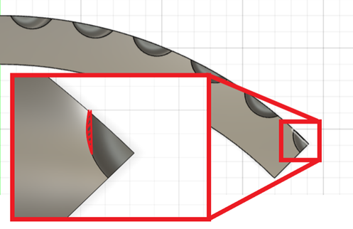Þetta var lítið mál að laga með því að einfaldlega endur teikna einungis þennan prófíl og þannig gera hann aðgengilegri fyrir fræsinn.
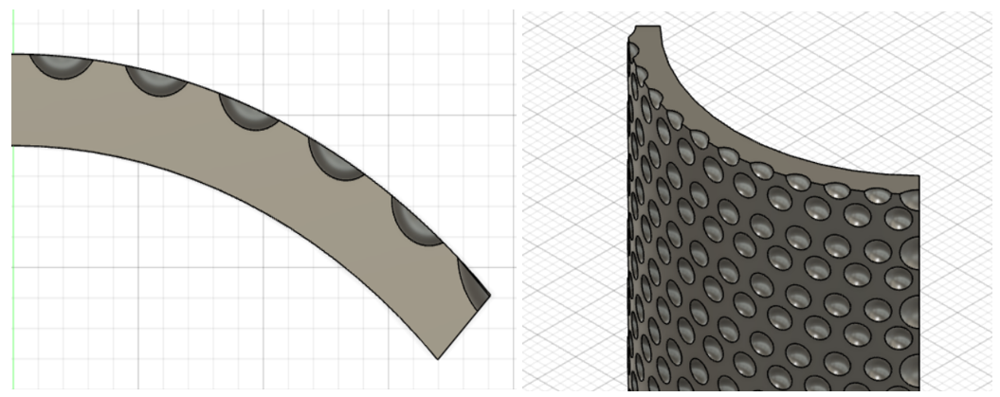Næst var umgjörðin teiknuð ásamt festingum, hún leit svona út.
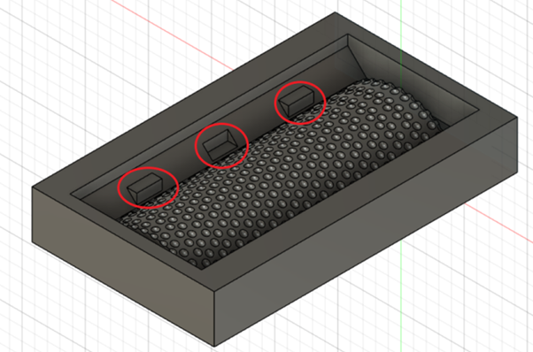Val á festingum milli móta (merkt með rauðum hringum hér fyrir ofan) réðst aðallega að því að veggir mótsins verða á 45 gráðu halla vegna hringafjórðunganna. Með því að velja þríhyrningana mun fræsarinn ekki lenda í að kljást við óaðgengileg svæði, eins og var fjallað um hérna rétt áðan.
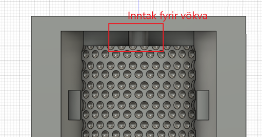Hér fyrir neðan má sjá hvernig negatívurnar sem koma út úr vaxmótinu munu líta út, ásamt því hvernig þær verða festar.
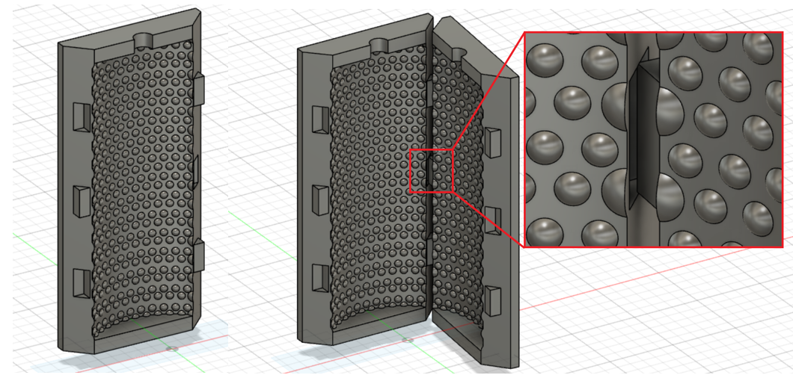Eins og klókir hafa mögulega tekið eftir, þá munu þessi mót aðeins gefa okkur gegnheilan sílinder með golfkúlu mynstri á ytra yfirborði – en við viljum fá hulsu. Því þurftum við að hanna annað 3D prentað stykki sem að mótin hanga á í steypingu.
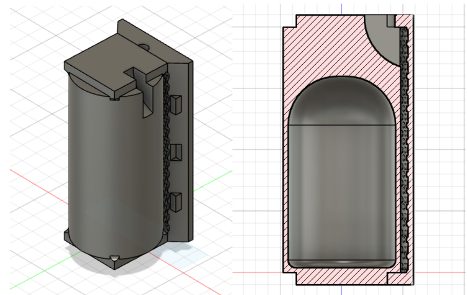Einnig ákváðum að búa til tvö mót út úr vaxkubbinum til þess að hámarka nýtni kubbsins.

Til þess að undirbúa leiðarval fræsingarinngar fylgdum við einfaldlega myndböndunum hans Jóns Þórs.
- Mótagerð 1 - Fusion360 - Kynning á mótagerð
- Mótagerð 2 - Fusion360 - Búa til 3D Módel fyrir Mót
- Mótagerð 3 - Fusion360 - Setja upp vaxkubb fyrir fræsun
- Mótagerð 4 - Fusion360 - Toolpaths fyrir fræsun
- Mótagerð 5 - Fusion360 - Post Process, vista skjöl fyrir fræsara
Til þess að graf aút mest megins af vaxinu var valið Pocket og eftir hana nota Paralell stillinguna (sbr. myndbandi 4) til þess að fínpússa yfirborðinu. Annars notuðum við nákvæmlega sömu stillingar og Jón Þór. Hér fyrir neðan má sjá stillingarnar á bitunum sem voru notaðir í verkefninu, annarsvegar var 1/8″ ball nose biti notaður í Pocket aðgerðina og hinsvegar 1/32″ biti í Paralell/fínpússun.
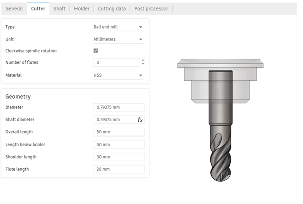 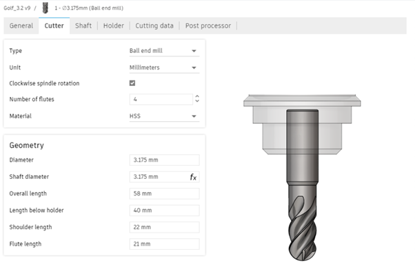Mikilvægt er að breyta Cutting Data stillingunum fyrir báða bita í eftirfarandi.
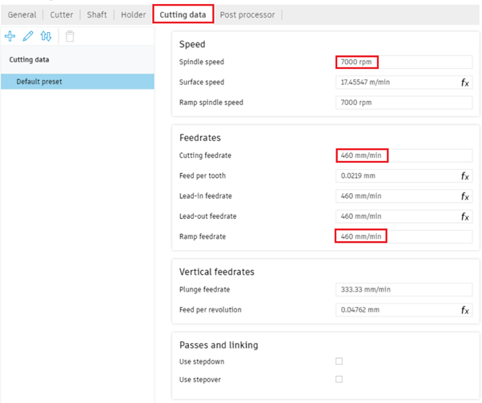Fræsing
Pocket aðgerðin fór vel fram, hinsvegar tókum við eftir örlitlum erfiðleikum þegar fræsirinn var settur afstað í fínpússun. Bitinn byrjaði að fara örlítið of innarlega við jaðra mótsins þar sem lengd bitans er svo lítill hluti af heildarlengdinni. Þar af leiðandi fræsist út efni alveg við jaðarinn (bláa línan á myndinni hér fyrir neðan).
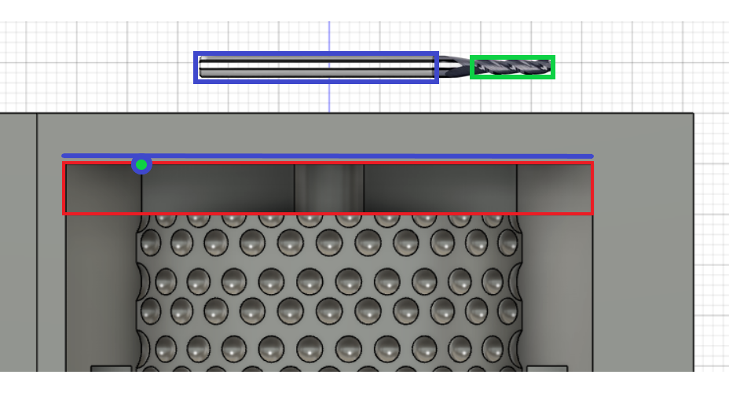Fræsingin var því stoppuð og eftirfarandi breytingar gerðar. Í Paralell leiðarvalinu þarf að fara í Geomitry flipann og haka í Avoid/Touch Surface og velja þau plön sem að þurfa ekki vera fræst út.
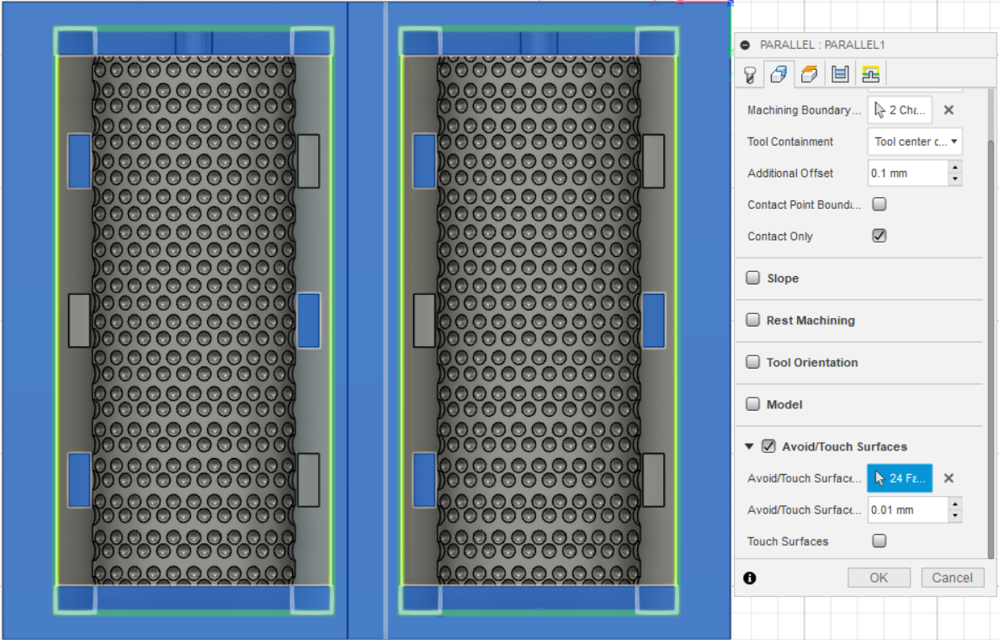Því næst ákváðum við með samráði við Hafliða að nota 1/8″ ball nose bitann aftur í fínpússun á hinum hliðunum sem við höfðum ekki fínpússað. Mikilvægt er að haka í Touch Surfaces þannig að fræsisinn fari aðeins yfir valin svæði!
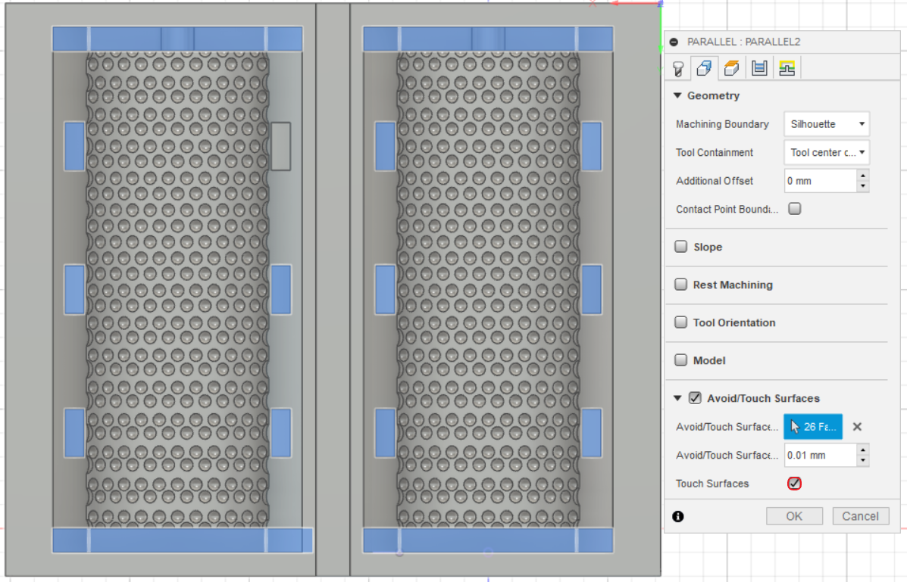 Fræsingin var framkvæmd í FabLab RVK og notast var við Roland SRM-20, sem gerir okkur kleift að setja inn Tool Path beint í forritið VPannel sem sendir gögnin beint í fræsun. Mikilvægt er að setja inn eitt Path í einu þar sem við þurfum að skipta um bora fyrir hvert Path. Hér fyrir neðan má sjá uppstillinguna fræsarans í FabLab RVK. 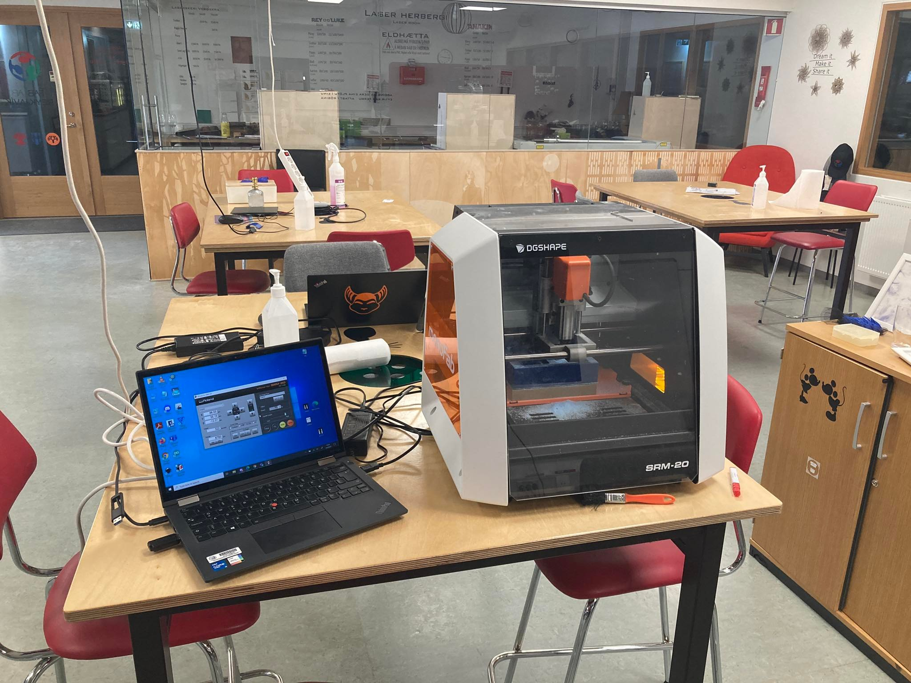Þegar fræsingin hófst virtist vera skekkja í Z-planinu þar sem hann byrjaði að fræsa í lausu lofti. Mögulega hefur verið ónákvæmni í uppsetningu fyrir lengd bitans í Fusion360, þannig að við þurftum að handstilla byrjunarstaðsetningu Z-plansins þannig að allt passaði. Hér fyrir neðan má sjá mynd af vaxkubbnum eftir Pocket aðgerðina og einnig þegar fínpússunin var hafin.
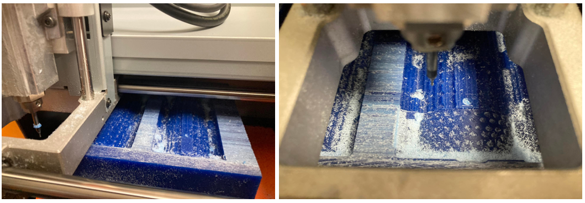Mikilvægt er að fylgjast með tækinu við upphaf hverrar aðgerðar og athuga hvort það sé ekki alveg örugglega verið að fræsa út skv. teikningu. Einnig er mikilvægt að kíkja á tækið af og til og sjá hvort vaxkubburinn sé yfir fullur af sagi. Ef svo er þarf að stoppa fræsinguna, fjarlægja sagið og halda áfram.

Hér má eining sjá myndband af færsinum vinna í detailunum.
Loka niðurstaða fræsingar er hér fyrir neðan.
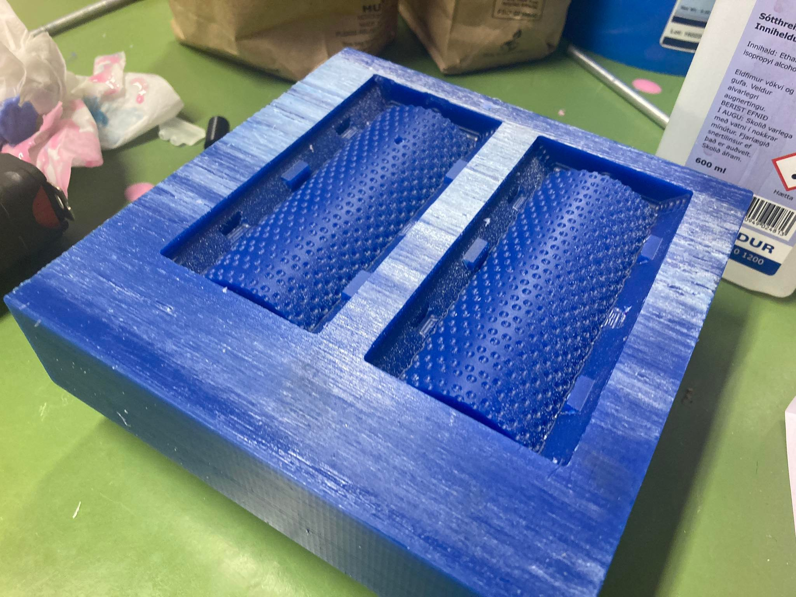Næsta skref var að steypa sílikonið í vax kubbinn. Sílikonið sem við fengum í hendurnar var Body Double frá Smooth-On og á síðunni þeirra má lesa sig til um allar helstu upplýsingar sílikonsins. Body Double hefur rúmar 5 mínútur í vinnslu tíma og 20 mínútur í þurrkunar tíma, sem er bæði kostur og ókostur. Þegar vinnslutíminn er svona stuttur er erfitt að koma í veg fyrir loftkúlu myndun sem á sér stað þegar sílikoninu er hellt í mótið. Hinsvegar er sílikonið mun fyrr að þorna, þannig ekki er þörf á mikilli bið eftir að því hefur verið hellt í mótið. Við lentum því miður í því að fá örlítið að loftbólum en vorum sáttir við niðurstöðuna. Við ákváðum einnig að festa tvo fjórðunga saman með þunnu lagi af blautu sílikoni þannig að það væri minna mál að púsla niðurstöðunum upp að 3D prentaða bitanum. Niðurstöðu steypingu má sjá hér fyrir neðan ásamt afleiðingum loftkúla við steypingu.
 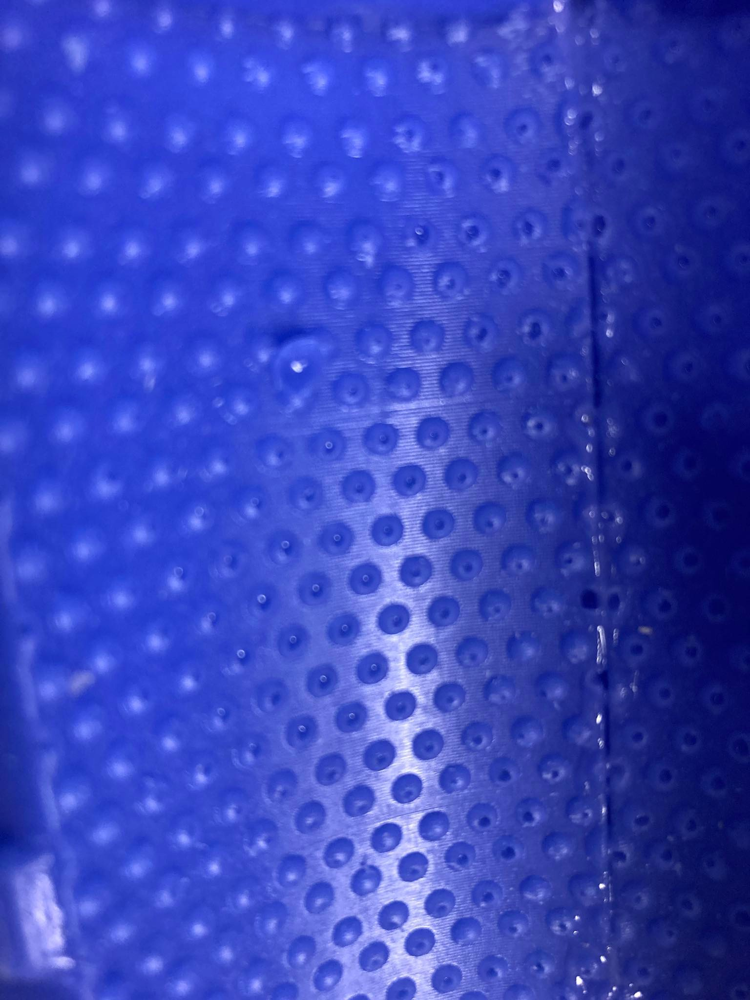
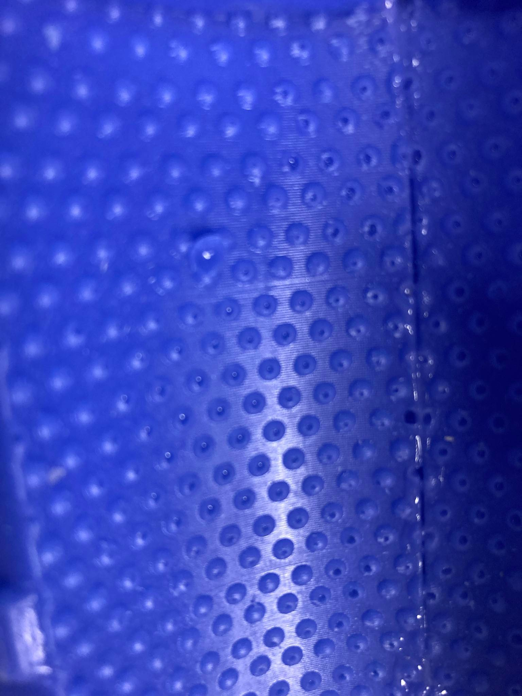
Því næst þurftum við að undirbúa okkur fyrir stepingu út frá mótunum. Svo að fljótandi sílikonið festist/blandist ekki við fasta sílikonið í mótinu þurftum við að setja "Silicone Release" yfir það yfiriborð sem fljótandi sílikonið snertir. Við áttum ekki til slíkt, þannig að við notuðum blöndu af hreinu isopropanol og uppþvottalög (2 hlutar isop:1 hluti uppþvottal) sem virkar einnig vel. Eftir að blöndunni var smurt yfir öll yfirborð mótsins settum við sílikon mótin upp að 3D prentaða stykkinu og notuðum spotta til þess að herða mótin að stykkinu eins og sérst hér fyrir neðan.
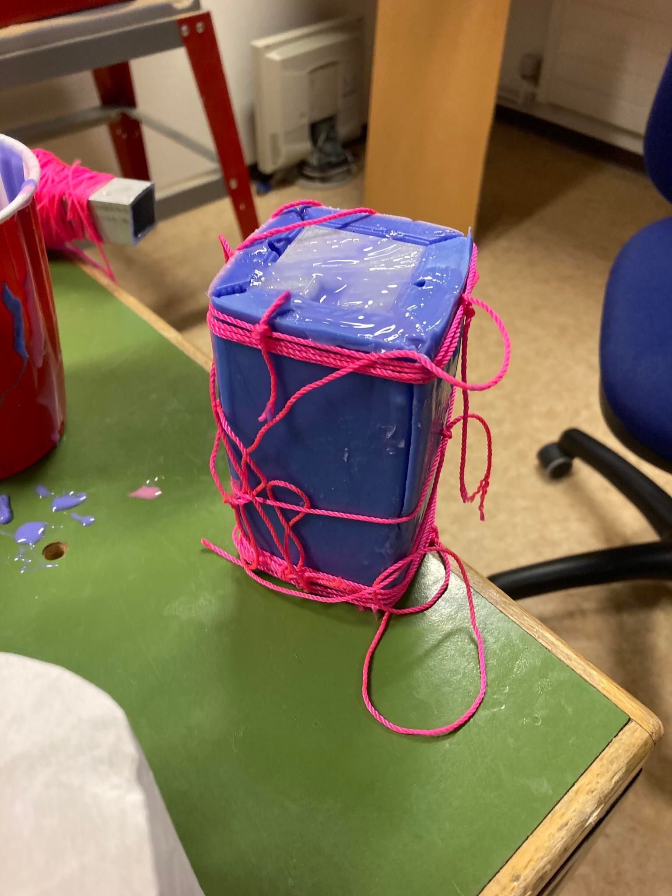Við hinsvegar komumst strax að stórum galla í hönnuninni. Opið fyrir innflæði sílikonsins er mjög lítið og þar sem að vinnslutími efnisins er mjög stuttur verður það fljótt mjög seigjukennt. Þar af leiðandi nær sílikonið ekki að flæða nægilega vel inni í mótinu.
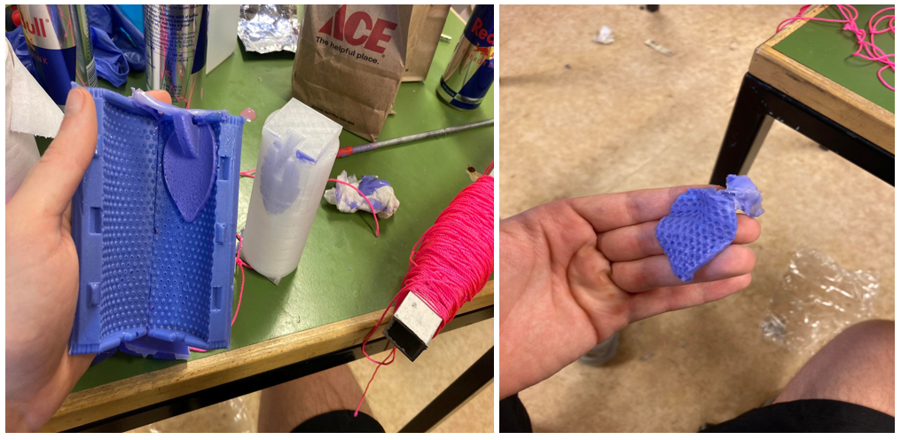Við vorum hinsvegar ekki tilbúnir að gefast svona auðveldlega upp!! Öll höfuð hópmeðlima voru lögðum hugann í bleyti (í formi vatnspyngtingar) þar til að upp kom frábær hugmynd. Þar sem gallinn var dreifing sílikonsins innan í mótinu, ákváðum við að blanda sílikon og dreifa því yfir yfirborð beggja helminga mótsins og þaðan pressa helmingana við 3D prentaða stykkið með handafli, svolítið eins og vöflubakstur.
Þessi aðferð krafðist mikla nákvæmni og þolinmæði þar sem við sjálfir þurftum að halda mótunum á sama stað í langan tíma. Eftir tvær tilraunir heppnaðist þetta nokkuð vel og niðurstöðu má sjá hér fyrir neðan.
Eins og sést í myndbandinu fór örlítið sílikon út fyrir mótið, en það var er í góðu þar sem það er auðveldlega fjarlægjanlegt með beittum hníf. Loka niðurstöðu má sjá hér fyrir neðan.
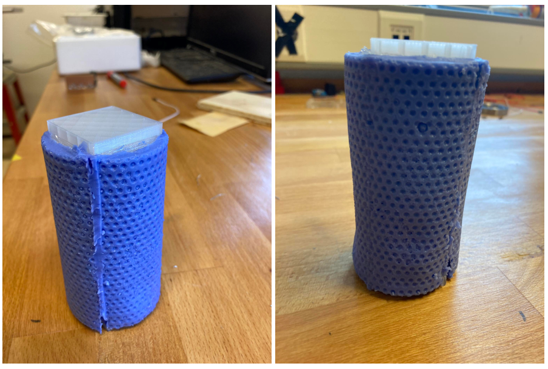Við enduðum á því að komast fram hjá notkun sílikonsins í verkefninu þar sem þörf á þessum hulsum var mikil. Þar af leiðandi tókum við ekki sílikonið af stykkinu svo hægt sé að sýna eininguna á sýningardegi.
Hér má ná í af mótinu í Step File.
Hluti 2 - Verkefnastjórnun, skrásetning og kynningar
Í þessum hluta verður farið yfir allt sem tengist ekki beinni vinnu í fræsingunni, þ.e. verkefnaskipulag, uppsetning á kynningu o.s.frv.
Við upphaf verkefnisins var sett upp í Excel gróf skipulagsáætlun fyrir mismunandi verkþáttum verkefnisins sem innihélt áætlaðan vinnutíma ásamt ábyrgðarmanni fyrir hvert verkefni. Skipulag á verkþáttum var sett á síðunni Trello sem er mjög einföld leið til að skrásetja liði verkefnisins, dreifa álagi á milli hópmeðlima og hafa yfirlit á árangri verkefnisins. Það kostar ekkert að setja upp aðgang, en hinsvegar bjóða þeir upp á áksrift fyrir auka aðgang að virkni síðunnar. Hér fyrir neðan má sjá Trello skjáinn okkar þegar við vorum komnir örlítið komnir inn í vinnsluferlið.

Eins og sést er mjög góð yfirsýn með öllum verkferlum sem þarf að klára áður en verkefninu er lokið.
Við náðum einnig í viðbótin TeamGantt sem bætir einnig við valmöguleikanum að setja upp Gantt rit til þess að fylgjast með öllum verkþáttum fyrir hvern dag og fá sjónrænt yfirlit hvað við eyðum í raun og veru miklum tíma í hvern verkþátt. Hér fyrir neðan má sjá uppsetningu Gantt ritsins okkar.
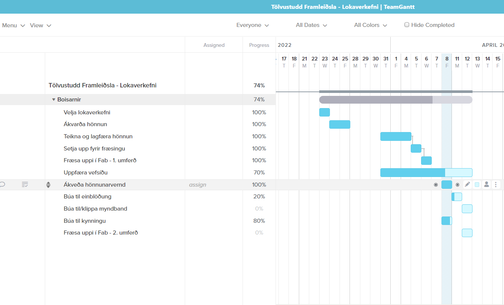Til þess að ná í TeamGannt þarf að smella á Power-Ups á upphafsskjá Trello (merkt með rauðum hring á mynd fyrir ofan) og smella á Add Power-Ups. Þaðan þarf að leita af TeamGannt og smella á flipann þeirra. Við uppsetningu á TeamGannt þarf einnig að búa til aðgang hjá þeim.
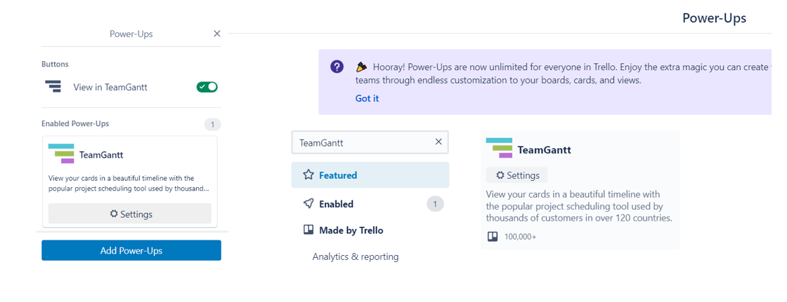Einnig er hægt að horfa á þetta myndband fyrir örlitla útskýringu á hvernig TeamGantt virkar ásamt uppsetningu þess. Hér má einnig er hægt að fá aðgang að Trello uppsetninguna okkar.
Kynningar og fleira
Hér má sjá kynningarmyndband verkefnisins.
Hér má ná einblöðung verkefnisins, unnin út frá sniðmáti í Microsoft Word.
Hér má ná í afrit af kynningu verkefnisins.
Hönnunarvernd
Þar sem hönnunin er tiltölulega einföld og ekki byltingarkennd erum við ekki hræddir um að hönnuninni verði stolið. Þar af leiðandi völdum við FAB-hönnunarverndina, sem gerir öðrum aðillum kleift að nota, breyta, dreifa eða framkvæma verkið í hvaða tilgangi sem er. Eina krafan er sú að sá aðilli sem vill nýta þessa hönnun þarf að vitna í okkar hönnun í dreifingu, notkun og svo framvegis.
License
(c) 08/04/2022 This work may be reproduced, modified, distributed, performed, and displayed for any purpose, but must acknowledge "project name". Copyright is retained and must be preserved. The work is provided as is; no warranty is provided, and users accept all liability.